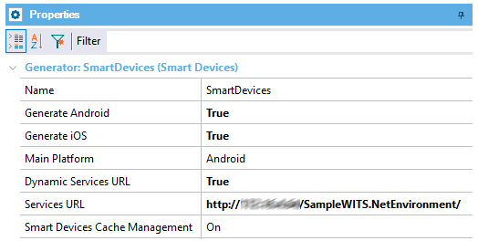
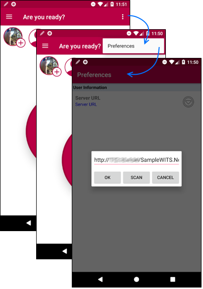
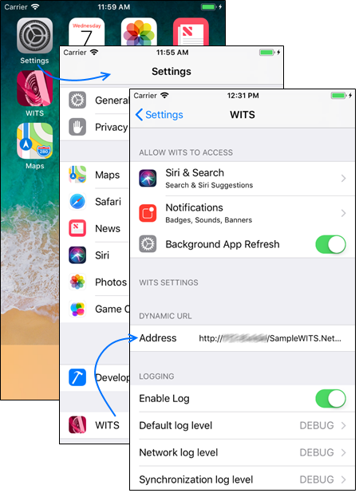

When you develop and then publish your smart device application, the services URL is taken from Web Root property. However, in some situations, you may need to change that URL for consuming the services from another server. In order to achieve that aim, GeneXus provides a way to indicate that the services URL can then be changed for the installed application without having to publish the application again in the relevant stores.
Generators: Android platform, Apple platform.
Go to the properties of Smart Devices Generator and change Dynamic Services URL property value to True and enter a default value for Services URL property.

Note: Refer to Services URL property more information about URL format.
Generate, compile and publish your application as usual.
Once your application has been installed on a device you will be able to change the Services URL.
Android, execute your application, go to the contextual menu and select Preferences. Then, a dialog will be displayed. Tap on the down arrow and enter the services URL.

Go to Settings and select your application. Now just enter the new services URL in the Address field.

If Services URL is empty when entering to the application the application will ask you for a Services Url. Anyway, consider setting a default value for your products because for example in the Apple approval process the application will not be approved without a sample server.
| Backlinks |
| Services URL property |